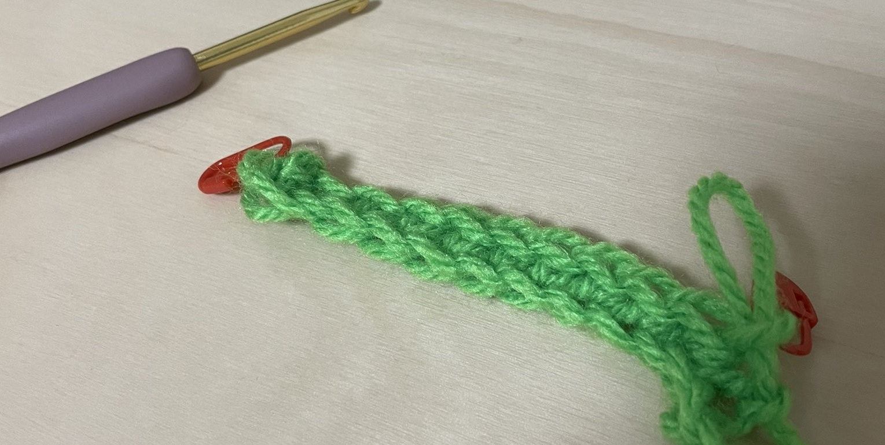
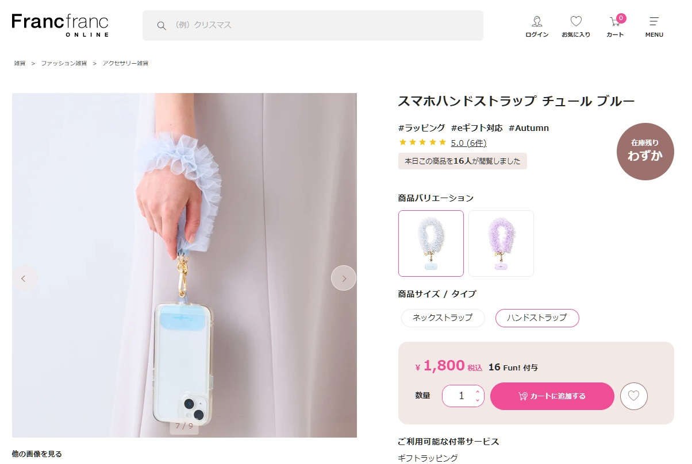
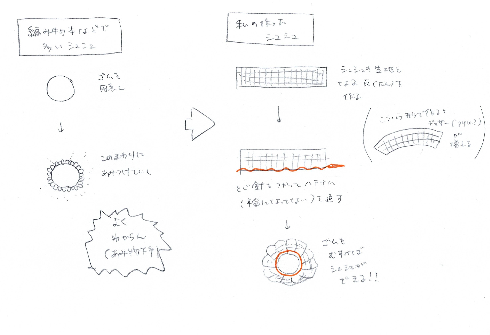
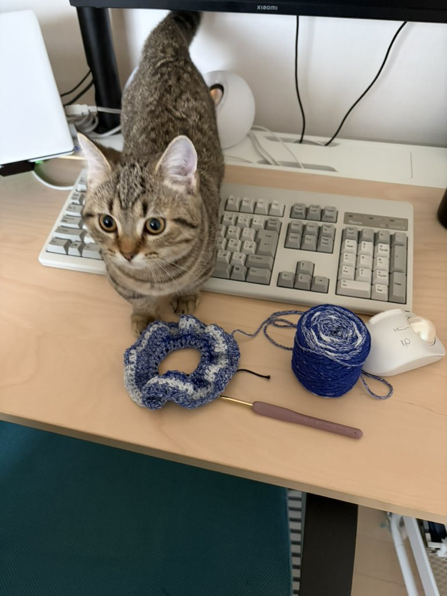

<!DOCTYPE html>
<html lang="ja">
<head>
    <meta charset="utf-8">
    <title>20251127我流で因縁のシュシュを編む</title>
    <meta name="viewport" content="width=device-width, initial-scale=1.0">
    <link rel="stylesheet" href="../css/common.css">
    <link rel="stylesheet" href="../css/sidebar.css">
    <link rel="stylesheet" href="../css/column2.css">
    <link rel="stylesheet" href="../css/responsive.css">
    <link rel="icon" href="../favicon.ico">
  <!-- OGP設定 -->
    <meta property="og:title" content="20251127我流で因縁のシュシュを編む">
    <meta property="og:type" content="website">
    <meta property="og:image" content="images/header011.jpg">
</head>
<body class="fade-in">
    <!-- サイドバー -->
    <div class="sidebar">
        <ul>
            <li class="sideLink sideLinkTop">
                <a href="../index.htm">
                    トップ
                </a>
            </li>
            <li class="sideLink sideLinkColumn">
                <a href="../column.html">
                    コラム／日記
                </a>
            </li>
            <li class="sideLink sideLinkBook">
                <a href="../book.html">
                    出した本
                </a>
            </li>
            <li class="sideLink sideLinkEvent">
                <a href="../event.html">
                    イベント情報
                </a>
            </li>
            <li class="sideLink sideLinkForm">
                <a href="../form.html">
                    お問い合わせ
                </a>
            </li>
        </ul>
    </div>
<!-- メインカラム -->
    <div class="mainColumn">
        <div class="mainColumnList">
            <h1>
                20251127我流で因縁のシュシュを編む
            </h1>
            <hr>
            <div>
                <div class="ColumnBodyList">
                                        
                    <pre>
「シュシュ」というヘアアクセサリーがある。元々は束ねた髪の毛を装飾するヘアアクセサリーだが、最近はスマホショルダーとして使っている人もちらほら見かけるようになってきた。

▲ Francfrancのサイトから引用（閲覧日：2025年11月26日）。これはチュール生地のようだ。
商品ページはこちら⇒<a href="https://francfranc.com/products/1106090064706">https://francfranc.com/products/1106090064706</a>

シュシュは可愛い。手縫いでシュシュを作ったことはあるが、どうやら教本を見た感じ、かぎ針編みでもできるみたいだ。しかも簡単だと書いてある。作ってみようではないか！

……そう考えたのがおよそ10カ月前。やってみると「編み物としてのシュシュ」はわたしには難しすぎて、早々に挫折した。
かぎ針編みでシュシュを作る際は、既に輪になっているゴムを用意し、そこに円形に巻き付けて編みこんでいく。これが結構難しい。挑戦してみてすぐ、くちゃくちゃなゴミのようなものができた。「わたしってやっぱり不器用だなあ」と思うには充分な出来だった。そしてくちゃくちゃなゴミのようなシュシュになりたかった何かは、家の奥に仕舞われてしまった。

創作の良いところは、さまざまな選択肢があることだ。かぎ針編みに挫折してから2ヶ月ほど後、2025年1月に、わたしは性懲りもなく棒編みを始めた。そして6月には縫い物のスピードをあげたくなって、ミシンを手に入れた。そのあたりから、どんどん創作スピードが上がっていった。物が作れると、自信がつくようになってくる。自信がつくと、ちょっとした失敗でもへこたれない。そして11月も後半に入り、突然ひらめいた。「今のわたしなら、因縁の『編み物としてのシュシュ』を作れるかもしれない！」。今度は教本は開かなかった。我流の方法を思いついたのだ。その方法で30分ほど作業をしてみたら、なんと、できた！ そして翌日、忘れないように急いで下の図をかいた。


▲ 我流のシュシュの作り方。

要するに、編み物ではあるが、「縫い物としてのシュシュ」と同様に作ってみたのである。用意するのは輪になっていないゴム。反を縫い合わせ、そこにゴムを通して、最終的に輪に変形させる。「編み物としてのシュシュ」が立体を活かしてそのまま編み続けていく方法とすれば、「縫い物としてのシュシュ」は平面だったものを立体に組み上げていく方法。これは大きく異なる作業だ。
そして、「縫い物としてのシュシュ」がどうやらわたしには合っていたらしい。これは編み物の教科書に載っているような作り方ではないが、わたしにとっては立派なシュシュだ。

<div style="display: flex; gap: 16px;">
  <div style="flex: 1; text-align: center;">
    
  </div>
  <div style="flex: 1; text-align: center;">
    
  </div></div>

因縁のシュシュを我流で作り切ったことで、わたしはまた新しい技術を習得できた。大体わたしはかぎ針編みが苦手で、鎖編みと細編みという、基本の「き」と呼ばれるようなものでしか作品を作っていない。それがわたしにとってはコンプレックスだった。が、我流でいけば、ある程度のものは突破できる！ そしてその「我流」は、縫い物などの別のルートからでも習得することができるかもしれない！ そんなことを考えた。
こういう発見があるから楽しい。こういう発見があるから、わたしは苦手なものも続けていられる。


こういう文章を集めた本『Knitting＆Sewing』を制作中です。応援よろしくお願いします。

                    </pre>
    </div>
            <div class="ColumnBodyList">
                <a href="../column.html">■戻る</a>
            </div>
        </div>
    </div>

<!---画像拡大表示用-->
<div id="imgModal" class="modal">
  <span class="modal-close">&times;</span>
  
</div>

<style>
.modal {
  display: none; 
  position: fixed;
  z-index: 9999;
  padding-top: 40px;
  left: 0;
  top: 0;
  width: 100%;
  height: 100%;
  overflow: auto;
  background-color: rgba(0,0,0,0.8);
}

.modal-content {
  margin: auto;
  display: block;
  max-width: 90%;
  max-height: 90%;
}

.modal-close {
  position: absolute;
  top: 20px;
  right: 30px;
  color: #fff;
  font-size: 40px;
  font-weight: bold;
  cursor: pointer;
}
</style>

<script>
document.querySelectorAll('.enlargeable-img').forEach(img => {
  img.addEventListener('click', function() {
    const modal = document.getElementById('imgModal');
    const modalImg = document.getElementById('modalImg');
    modal.style.display = "block";
    modalImg.src = this.src;
  });
});

document.querySelector('.modal-close').onclick = function() {
  document.getElementById('imgModal').style.display = "none";
};

document.getElementById('imgModal').onclick = function(e) {
  if (e.target === this) {
    this.style.display = "none";
  }
};
</script>
<!--↑終わり-->

<script>
  window.addEventListener('load', function() {
    document.body.classList.add('loaded');
  });
</script>


</body>
</html>